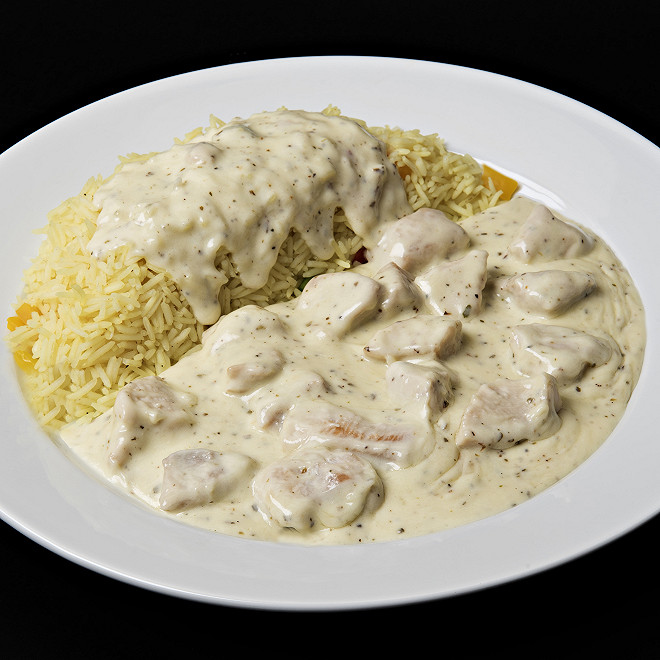

Poulet Boursin

Description
Une recette délicieuse que ma femme adore.
Très simple à réaliser, elle ravira vos papilles et celles de votre entourage.
Ingrédients
- Des aiguillettes de poulet
- Du boursin a cuisiner
- Du riz
Étapes
- Couper le poulet en cube et enlever les nerfs
- Faire dorer les petits poulets
- En parralléle, faire bouillir de l'eau
- Faire cuire le riz dans l'eau une fois arrivé à ébulition
- Ajouter le boursin cuisine au poulet